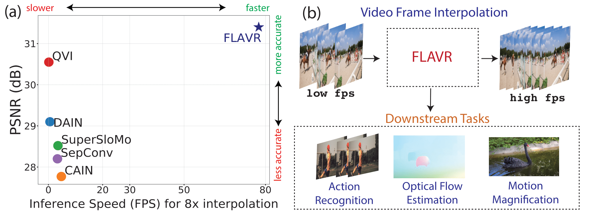

FLAVR: Flow-Agnostic Video Representations for Fast Frame Interpolation
- 1UC San Diego
- 2Carnegie Mellon University
- 3Facebook AI


Overview
A majority of approaches solve the problem of video frame interpolation by computing bidirectional optical flow between adjacent frames of a video followed by a suitable warping algorithm to generate the output frames. However, methods relying on optical flow often fail to model occlusions and complex non-linear motions directly from the video and introduce additional bottlenecks unsuitable for real time deployment. To overcome these limitations, we propose a flexible and efficient architecture that makes use of 3D space-time convolutions to enable end to end learning and inference for the task of video frame interpolation. Our method efficiently learns to reason about non-linear motions, complex occlusions and temporal abstractions resulting in improved performance on video interpolation, while requiring no additional inputs in the form of optical flow or depth maps. Due to its simplicity, our proposed method improves the inference speed by 384x compared to the current most accurate method and 23x compared to the current fastest on 8x interpolation. In addition, we evaluate our model on a wide range of challenging settings and consistently demonstrate superior qualitative and quantitative results compared with current methods on various popular benchmarks including Vimeo-90K, UCF101, DAVIS, Adobe, and GoPro. Finally, we demonstrate that video frame interpolation can serve as a useful self-supervised pretext task for action recognition, optical flow estimation, and motion magnification.
Highlights
- A flow-free, completely learning based appproach for video frame interpolation.
- End-to-end trainable on large scale unlabeled videos with arbitrary interpolation factors.
- 384x faster than current best approach and 23x faster than current fastest on 8x interpolation.
- Learned representations useful for downstream tasks like action recognition and optical flow.
- All code and trained models to be publicly available.